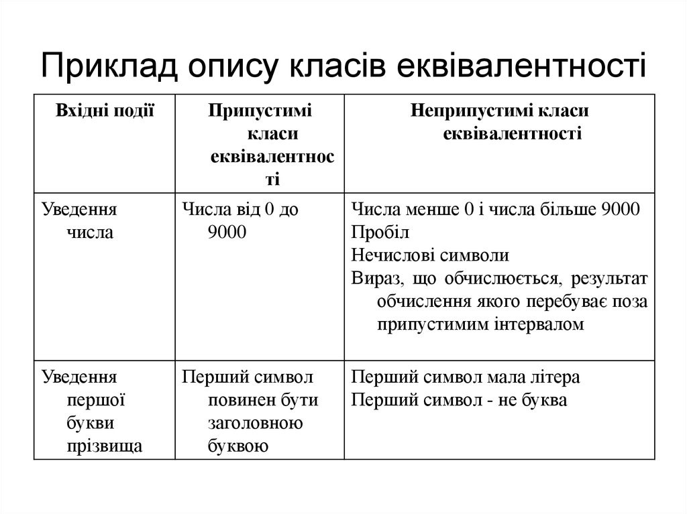
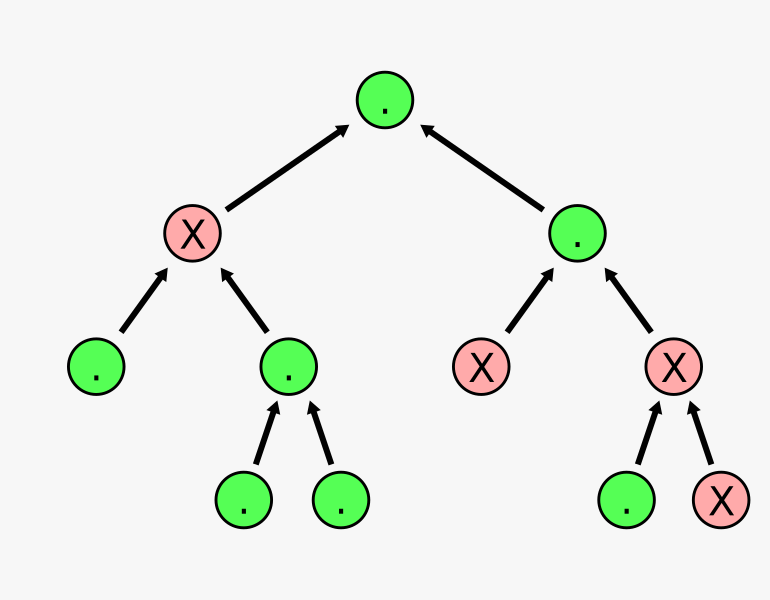

Test Design
Техніки Тестдизайну: Ключові підходи до ефективного тестування програмного забезпечення
Техніки тестдизайну (Test Design Techniques) - це набір методів та підходів, які використовуються для створення тестових випадків з метою виявлення дефектів у програмному забезпеченні. Ці техніки допомагають визначити, які тестові сценарії необхідно розробити для ефективного тестування різних аспектів програми. Основна мета технік тестдизайну полягає в максимальному покритті функціональності та можливих шляхів взаємодії з програмним продуктом з мінімальними зусиллями.
Деякі загальновідомі техніки тестдизайну включають:
- Еквівалентність Класів
Техніка еквівалентності класів передбачає тестування лише представників кожного класу вхідних даних замість усіх можливих значень. Наприклад, якщо вимоги до програми передбачають введення чисел від 1 до 1000, то представниками класу будуть числа 1, 500 та 1000. Ця техніка дозволяє ефективно покрити всі класи еквівалентності та зменшити кількість тестових випадків.
 - Межові Значення
Техніка межових значень спрямована на тестування значень, які знаходяться на межі діапазонів допустимих значень. Такі значення часто призводять до помилок через неправильне оброблення границь. Наприклад, якщо програма очікує введення чисел від 1 до 1000, то тестування межових значень включатиме числа 1 та 1000.
- Парний Перебір
Ця техніка передбачає тестування всіх можливих комбінацій двох або більше параметрів. Парний перебір дозволяє зменшити кількість тестових випадків, зберігаючи при цьому покриття різних комбінацій параметрів. Наприклад, якщо є два параметри з десятками можливих значень, парний перебір включатиме усі можливі комбінації цих значень.
- Дерево Рішень
Ця техніка використовується для аналізу усіх можливих шляхів взаємодії з програмою та розробки тестових сценаріїв для кожного з них. Дерево рішень дозволяє систематично визначити всі можливі шляхи виконання програми та виявити потенційні точки вразливості.
 - Умовні Переходи
Ця техніка передбачає тестування всіх можливих шляхів виконання умовних переходів в програмі, включаючи всі можливі альтернативи та виняткові ситуації. Тестування умовних переходів дозволяє виявити помилки у логіці програми та неправильні умови виконання.
- Аналіз Помилок та Вузьких Місць
Ця техніка передбачає аналіз попередніх помилок, виявлених у попередніх версіях програми або схожих програмах, для виявлення вузьких місць та точок, які потребують спеціальної уваги при тестуванні. Аналіз помилок дозволяє попередити повторення попередніх проблем та забезпечити високу якість програмного забезпечення.
Узагальнюючи, техніки тестдизайну є важливим інструментом для розробки ефективних тестових сценаріїв, що допомагають забезпечити високу якість програмного забезпечення та виявити можливі дефекти в ньому. Використання різних видів технік тестдизайну у поєднанні зі знанням специфіки програмного продукту дозволить забезпечити ефективне тестування та покращити його якість.